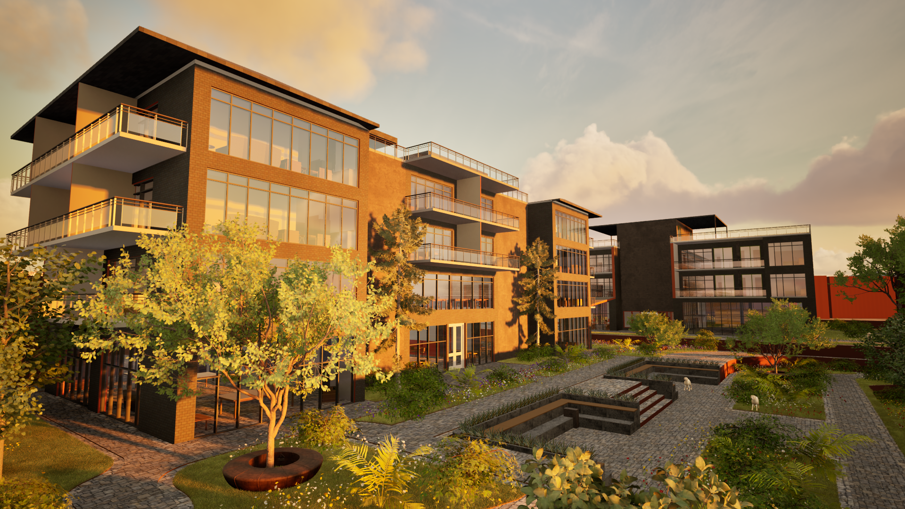
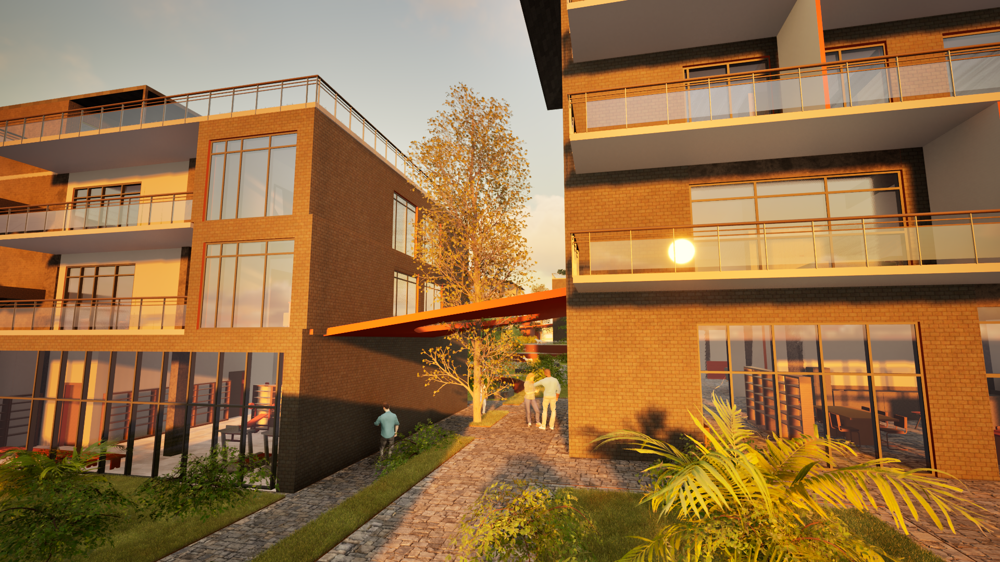
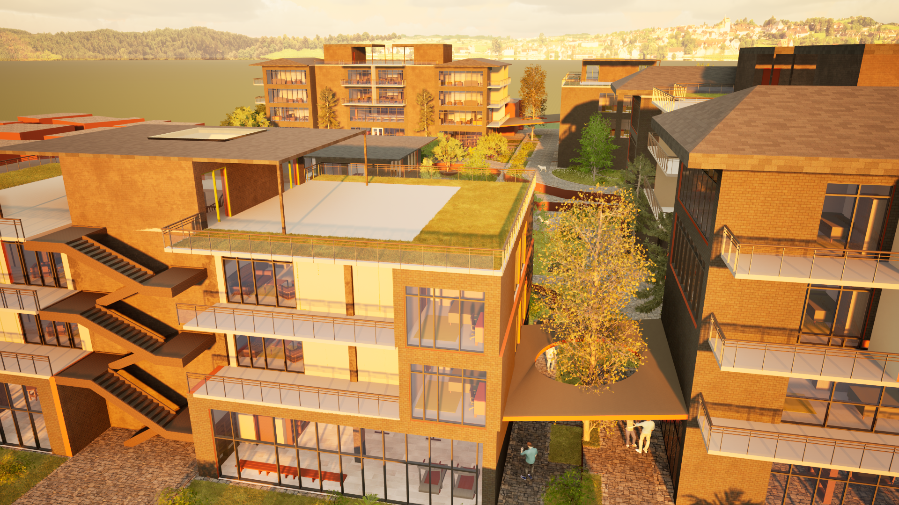

Community-Centered Housing in Urla
Located in the heart of Urla, this 11,200 m² residential development reimagines housing as a vibrant social environment. Comprising 64 residences across six blocks, the project is designed to encourage everyday interaction through shared spaces, communal facilities, and open public areas that strengthen neighborhood connections.
Five different housing typologies respond to the needs of an intergenerational community, accommodating students, families, and elderly residents within a unified architectural language. Shared amenities are integrated into the ground floors, creating an active and permeable street level that blurs the boundary between private living and collective life.
By balancing individual comfort with community engagement, the project proposes a contemporary residential model where architecture becomes a catalyst for social connection and inclusive urban living.


